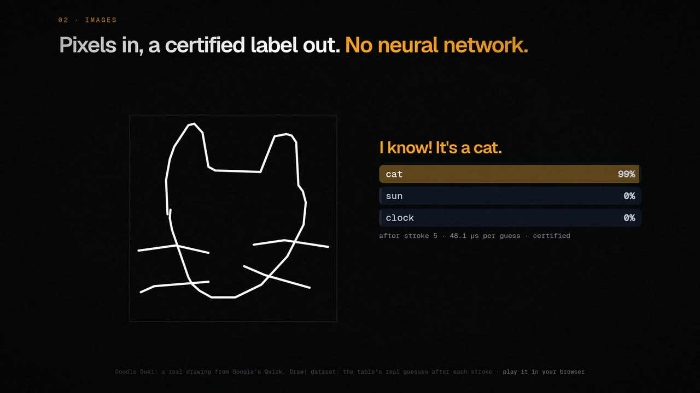

shad0w learns the answers your LLM keeps giving, proves it matches them, and serves those in microseconds. Anything new still goes to your LLM.
pip install "shad0wllm[compile]"
Loading a real 77-intent table…

42 seconds, sound on. Every number and every guess on screen is real.
alsoimagesprompt guardweb agentslive streamsgamesEverything in the playground →
Your LLM keeps answering. shad0w writes the answers down, learns a small table from them, proves where it agrees, and answers the repeats.
About 1,000 logged answers become a table. No labels, no GPU, under a minute.
On answers it never trained on, it finds the confidence above which it differs from your LLM on at most 5%, at 90% confidence.
Above that line the table answers in microseconds. Below it your LLM answers, and the table keeps learning. 1% is spot-checked live.
Public datasets, a real hosted LLM as the teacher. Every number is rebuilt from a result file.
Inside your app. No network hop, no GPU. 1.0 µs in C, 10 µs in JavaScript.
of messages answered by the table instead of your LLM, at α = 5%.
differed from your LLM. The promise was at most 5%; a 90% promise can miss, so live spot checks keep watching.
teacher: a hosted LLM through the official OpenAI client · agreement re-checked by asking the LLM directly
All benchmarks →Decision Bench: six public tasks, the same rows and the same 5% certificate for every system. shad0w was trained on each task; the decision models answered zero-shot.
| task | shad0w: accuracy · time | best open decision model, zero-shot | more accurate |
|---|---|---|---|
| BANKING77 · 77 intents | 94.0% · 6.0 µs | Kev-0.8B: 83.3% · 2.6 s | shad0w |
| CLINC150 · 150 intents | 84.6% · 6.5 µs | Decider-0.8B: 83.3% · 5.6 s | shad0w |
| AG News · topics | 91.2% · 10.1 µs | Laya: 93.8% · 124 ms | Laya |
| SST-2 · sentiment | 83.2% · 3.0 µs | Laya: 91.6% · 49 ms | Laya |
| SMS spam | 97.8% · 1.9 µs | Decider-0.8B: 95.3% · 3.6 s | shad0w |
| Prompt injection | 98.8% · 2.4 µs | GLiNER2.5-Decide: 94.6% · 113 ms | shad0w |
Three of six tasks shown. Decision models ran on the CPU with 5 threads; shad0w on one thread through the C core. All six tasks, every chart and caveat →
Wrap the question you already ask, or point base_url at the proxy.
import shad0w
intent = shad0w.decision("intent", llm="openai/gpt-4.1-mini",
options=["refund", "lost_card", "balance", "other"])
intent("my card was stolen").answer # your LLM answers; shad0w logs it
intent.train() # after ~1,000 answers: learn + certify
intent("my card was stolen") # Decision(answer='lost_card', source='table')Any OpenAI-compatible model, the OpenAI Decisions API, a decision model like Jev, or your own function: shad0w.Shadow("bundle/", llm=my_fn). Async: await intent.adecide(text).
import { decision } from "shad0wllm";
const intent = await decision("intent", {
options: ["refund", "lost_card", "balance", "other"],
llm: "openai/gpt-4.1-mini", bundle: "shad0w/intent/bundle" });
const d = await intent.decide("my card was stolen");
// { answer: "lost_card", source: "table", certified: true }Zero dependencies. Node, browsers, Workers, Deno, Bun. The same answers as Python from the same table.
# 1. start the proxy (dashboard at http://localhost:8010)
# shad0w proxy --upstream https://api.openai.com/v1 --auto-train 1000
# 2. move base_url. Nothing else changes.
client = OpenAI(base_url="http://localhost:8010/v1")
client.decisions.create(model="gpt-6-luna", input="my card was stolen", questions=[...])
# answers the table is sure of come back instantly, same JSON shape;
# the rest go upstream and are logged so the table keeps learningWorks for the OpenAI Decisions API, System One servers (Jev, Kev, Laya) and chat completions marked with the X-Shad0w-Question header.
5-minute guide → also HTTP · C · LangChain, LiteLLM, Vercel AI SDK
If your LLM picks from a fixed list, shad0w can learn it. If it writes, it can't.
→ lost_card→ team: mobile→ spam: yes→ tool: search→ topic: businessno network→ LLM→ LLM→ LLM→ LLMNo. A cache only answers texts it has seen before. shad0w answers new wordings of a question it has learned, and its certificate covers new messages that look like your traffic. Exact repeats are free on top.
Before it answers anything, the table is tested on answers it never trained on and picks a confidence line. Above it, the table differs from your LLM on at most α of what it answers, checked with 90% confidence. α is the most disagreement you allow: the default 5% means at most 1 in 20 answers. In our runs it actually differed 3.0–6.0% of the time: a 90% promise can miss, so live spot checks keep watching.
Then the table is wrong in the same way. The certificate is agreement with your LLM, not with the truth. For a bound against the truth, certify on a few hundred human-labelled examples instead.
About 1,000 logged answers per question to start; with 77 intents it answered 60% at 10,000 answers, and the share keeps growing. It costs nothing: Apache-2.0, the Python runtime needs only numpy, the JavaScript and C runtimes need nothing, and your logs stay on your machine.
Open source, Apache-2.0. CPU, browser, edge.
pip install "shad0wllm[compile]"